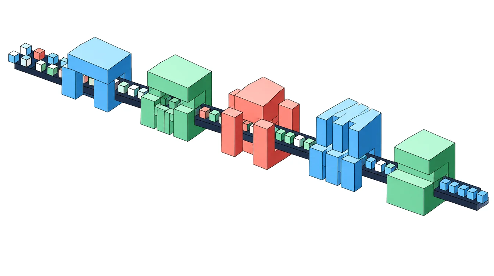

הקמת מערך בוט שירות חלומי
באוטומציה ובינה משלנו, נדבר עם הפונים אליכם בוואטסאפ ונחסוך מכם פעולות שרק חלמתם להפסיק לעשות, וגם תיראו מקצועיים מול הלקוחות שלכם.
פתרונות
יש לי מגוון פתרונות בשבילכם - בעלי עסקים שרוצים לשדרג קצת את איכות חיי העסק, בכל האגפים המעניינים.

שגרו ותשכחו. אני לוקח הכל אליי.
כדאי להתחיל את המסע הדיגיטלי שלכם עם משהו ועדיף להתמקד בדברים הכי חשובים ואלו שדורשים הכי הרבה סיוע. מפתרונותיי השונים:
באוטומציה ובינה משלנו, נדבר עם הפונים אליכם בוואטסאפ ונחסוך מכם פעולות שרק חלמתם להפסיק לעשות, וגם תיראו מקצועיים מול הלקוחות שלכם.
איסוף ותיעוד של כל הפניות והלידים מכל המקורות השונים אל הנציגים האחראיים בצורה מסודרת ומאורגנת ביותר.
בהתאם לסוגי הפניות והלידים, נבנה משפכים (Funnels) שירכזו את הכל במסודר כך שלצוותים יהיו שגרות עבודה ויכולת להגיע ליותר מענה וכמובן, יותר מכירות ושביעות רצון.
אם מדובר במשימות שנוצרות כחלק מהשלבים של התהליכים שנגדיר או כחלק מהתראות שנייצר, או המשימות השוטפות והכלליות בין הצוות, הכל מתרכז ללוח ניהול מסודר שמוודא שכל המשימות לא סתם נבלעות להן בחלל.
אני יודע לחבר אל המערכת מגוון רחב של מרכזיות ענן שיעניקו לכם יתרון מעולה בכל הנושא של ניהול השיחות והתיעוד של היסטורית התקשורת עם הלקוחות, כולל ניתוב שיחות שקופצות ישר למשתמש והשמעת הקלטות, ישר מכרטיס הלקוח.
כל תהליך המנוהל בעסק דורש בקרה והמון תשומת לב, אנו נעצב עבורכם דוחות שיעזרו לעובדיכם ולכם לעקוב אחרי כל התהליכים ולנהל את זה בפשטות כך שיהיה הרבה יותר נוח לגשת לעבודה ולרוץ על תהליכים שונים בצורה רוחבית ולהיות יעילים מאוד.
נוכל לייצר תהליכים של אישורי הגעה בכל רמה מול כל סוג של לקוח, אישורי ההגעה יכולים לרוץ על אוטומציות ויכולים להיות מתועדפים לנציגים הטלפוניים באוטומט, או דרך מנגנון חיוג אוטומטי שחוסך לצוות את הוצאת השיחות.
כמו שרלוק הולמס, אחקור את התהליך לעומק, עד שנוכל לבנות תהליך סגור שיפתח לנו דלתות.
ניתוח של נתוני השיווק ותוצאות המאמץ וההשקעה בשטח, החל מרווחיות ויעילות הקמפיינים ועד לעדכון המשווקים בזמן אמת אודות ההצלחות של הקמפיינים השונים.
בהתאם לעיצוב ולחלום שלכם, אבנה לכם מחולל הצעות מותאם אישית שיאפשר לכם להוציא הצעות מחיר מעוצבות, בשניות.
על בסיס מאגרי הנתונים של העסק, נריץ אוטומציות מותאמות אישית שיניעו את התהליך קדימה ולאט לאט ילמדו עוד ועוד פעולות שפשוט יחסכו לכל צוות העובדים גם המון זמן ובעיקר המון מחשבה מיותרת, בואו נריץ את העסק על אוטומט.
מאגר הנתונים שנבנה יעזור לנו לבנות מאגר לקוחות בקלות, על בסיסו נגדיר תהליכים שיעזרו לנו לייצר מועדון לקוחות מבוקר אשר אפשר גם לנהל מולו תקשורת רציפה ומתועדת אך גם לשלוח לו עדכונים וניוזלטרים כשנצטרך לקרב אלינו עוד לקוחות.
הזדמנות אשר הפכה לעסקה כלשהי נמיר להזמנת עבודה בה ננהל את כל התהליך מבחינת המוצרים/שירותים, תהליך התפעול של ההזמנה, שילוח, מחסנים, רכש, כספים, סליקת אשראי, תשלומים והנהלת חשבונות בענן, הכל מושתת על תהליכים אוטומטיים והתאמה אישית לכל תהליך תפעולי שניתן לאפיין.
אם בצורה ידנית או אוטומטית, בטקסט חופשי, מעוצב ודינמי, נוכל לייצר תהליכים ששולחים הודעות שונות ומגוונות משלל הפלטפורמות הללו וזה לא הכל! את התשובות חזרה אנחנו מקבלים גם כן ואלו הולכות ישירות אל היסטורית התקשורת של הלקוח כך שתמשיכו את השיח תמיד, מאותה הנקודה בה הוא נעצר!
דברו איתי על הפתרון הראוי לכם, אני איישם זאת עבורכם כך שכל מה שתצטרכו לעשות זה לדאוג שכל העובדים שלכם עולים על הגל.
אל תתביישו לשאול על פתרונות חדשניים, פשוט דברו איתי, תתייעצו, אל תתפשרו על מערכת חסרת שירות או על איזו מערכת מדף מיושנת שתתקע לכם את העסק.
פנו אליי ונראה יחד מה אפשר לעשות.